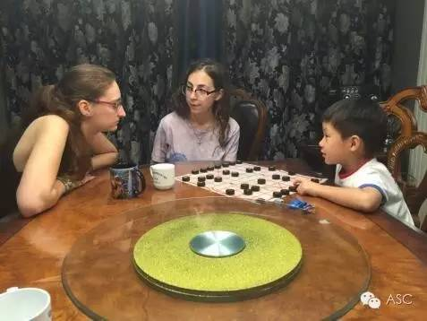
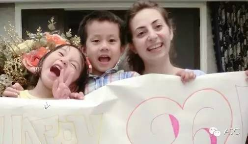

互惠动态
|
|
与互惠生第一次见面，满屏尴尬怎么破？
对于第一次邀请互惠生住家的您来说，是不是提前很久就已经做足了准备？崭新的洗漱用品、干净的床上用品、制定完美的每周家庭计划、提前全家恶补英语······这些确实可以帮助您和互惠生更快的进入熟悉状态。但是在ASC的经验里，当您和互惠生第一次见面时，会遇到各种不适应甚至是尴尬的情况。
初次见面：瞬间失忆，恶补的英语处于离线状态
当您和互惠生初次见面时，您发现之前远远高估了自己的英语水平，之前大学考的英语四六级证书、曾经在外企的经验，统统处于离线状态，都没有派上用场。或者，发现自己低估了自己的英语水平：哈，原来我可以说这么多，语言不够，手势来凑！
日常生活：双方磨合，我该怎么做？
家里突然多了一名互惠生，您可能开始注意平时的生活细节：使用洗手间时先敲门、烧饭时再三考虑，照顾互惠生的口味等，互惠生的到来，让您有那么几天谨小慎微，不知道该如何迎合互惠生的喜好。但您要知道，互惠生可能比您更紧张！毕竟对互惠生来说，这是一个全新的环境，如果没有您的帮助，互惠生可能更加的无所适从。可能互惠生和您都在想着，我该怎么做才能让他不那么紧张？/我该怎么做才能尽快融入这个家庭中？
新友交往：面对害羞的孩子，父母如何机智应对？
互惠生的主要职责是陪伴和培养孩子，我们的互惠爸妈们心心念念为了孩子学好外语，向外国哥哥姐姐学习良好的生活品行和习惯，欢天喜地地把互惠生带进家门的头一件事，就是让孩子认人，建立初步联系。但父母想法很好，现实往往不那么完美，任凭父母用尽方法，孩子就是“不来电”，羞于开口交流。这个时候，互惠生父母应该适当引导孩子做个小游戏，让孩子在玩耍中加深感情，促进交流。

期望破碎：深入了解后，你能否允许不完美？
也许您对互惠生抱有很高的期待，您可能认为互惠生就应该是健康开朗，积极阳光，善解人意又想象力丰富的，英语说的地道流利而且喜欢和您和孩子交流，在亲朋好友来访时能够帮您打点上下，挣足面子！但随着时间的流逝，您可能会发现，互惠生并不是那么完美，您可能就会抱怨。但您要知道，互惠生也是外国青年，她们也有不完美的一面。我们劝解您，文化差异导致的习惯可以理解，但是作为家庭东道主可以给互惠生制定明确的家庭规矩，所谓入乡随俗，互惠生应该多多尊重家庭的居家习惯才是。
与互惠生交往，要多沟通、多理解，经过初期的磨合，您会发现，您和互惠生会在生活中变成一家人。互惠生活动，不仅让您的孩子学到更多的外语知识，也让您的家庭收获另一个家庭的友情和亲情！


关于互惠，您了解得够多么？
请外国学生来家庭照顾孩子，辅导孩子外语？
只了解这些是不够的！
获取更多信息请参考以下方式：
联系ASC：
电话：86-21-61116069(上海中心）
86-25-66065662（南京中心）
手机：15601666586（可加微信）
Q Q：3259637585
微信：asc-center
邮箱：info@asc-center.com
网站：www.asc-aupair.com

感谢您对我们的关注